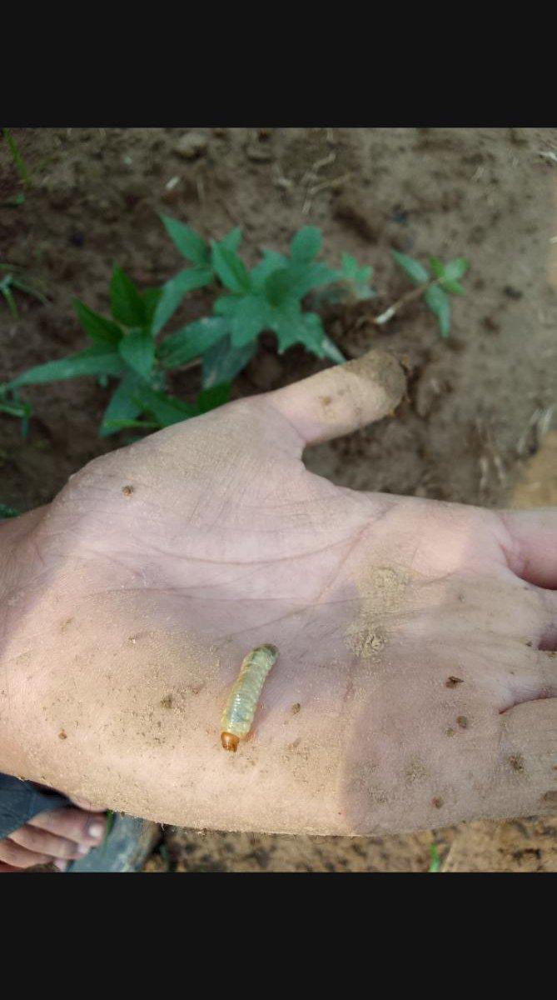

Pest pressure is patchy. Walking only the worst rows inflates damage scores and confuses genotype comparisons.
Define a fixed number of plants or leaves per plot, chosen in a consistent pattern (e.g. along a diagonal). Score presence/absence or severity with the same scale every visit. Note the insect stage when it matters (e.g. larva vs adult).
Pair scouting with management records: irrigation, weeding, and any sprays. That context helps interpret why some replicates look different even when genotypes are the same.